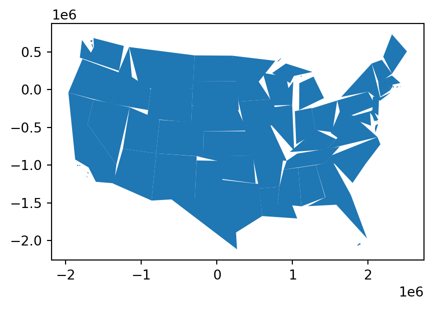
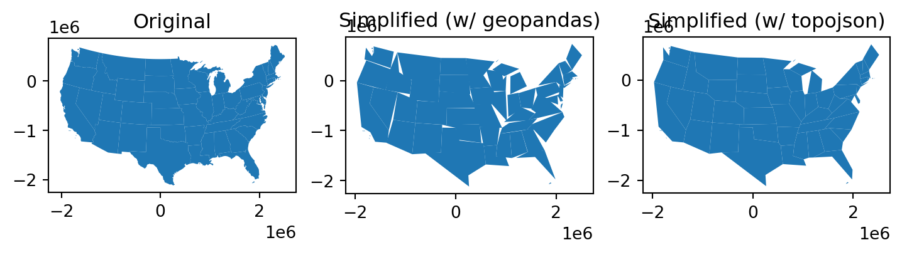
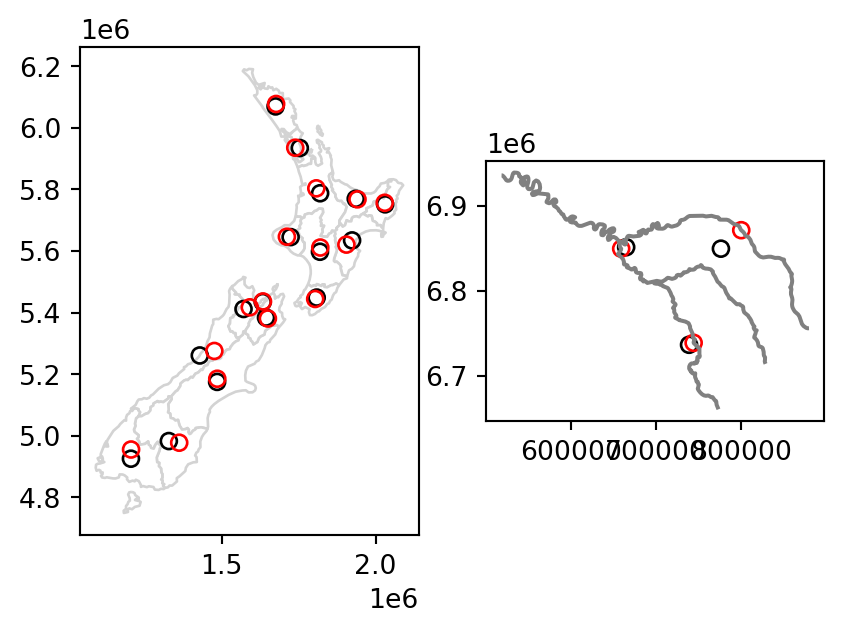
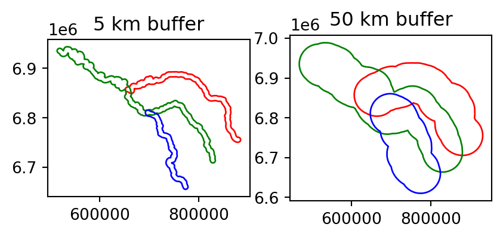
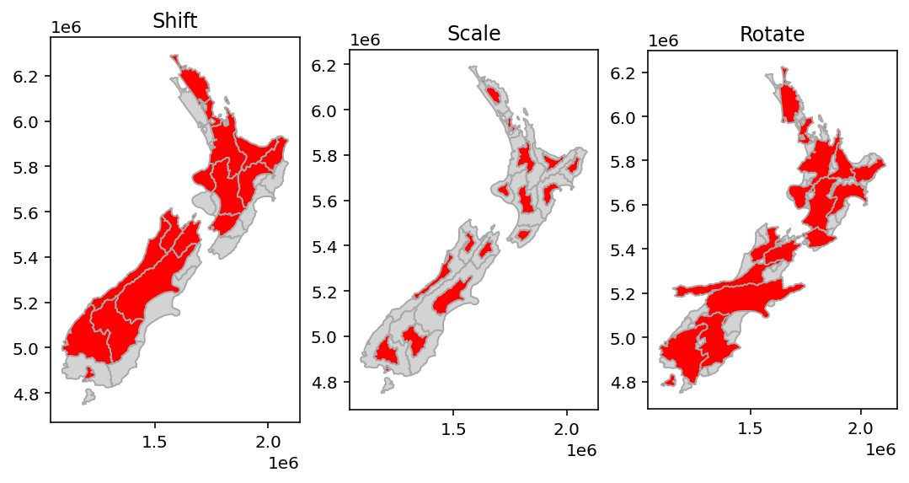
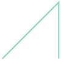
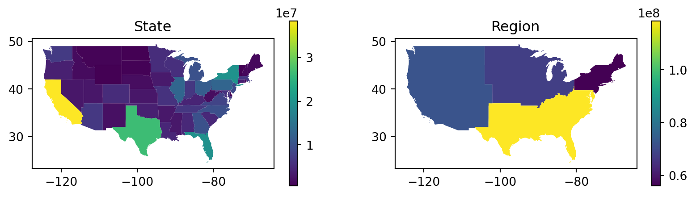
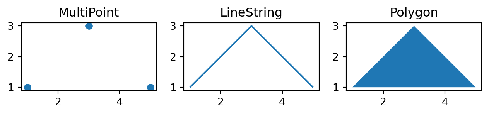

fig, axes = plt.subplots(ncols=2)
seine.plot(ax=axes[0])
seine_simp.plot(ax=axes[1])
axes[0].set_title("Original")
axes[1].set_title("Simplified (d=2000 m)");
An introductory yet rigorous and maintained resource on working with geographic data in Python 🎉
Packages…
import shapely.geometry
import geopandas as gpd
import topojson as tpSample data…
seine = gpd.read_file("data/seine.gpkg")
us_states = gpd.read_file("data/us_states.gpkg")
nz = gpd.read_file("data/nz.gpkg")So far the book has explained the structure of geographic datasets (Chapter 2), and how to manipulate them based on their non-geographic attributes (Chapter 3) and spatial relations (Chapter 4). This chapter focusses on manipulating the geographic elements of geographic objects, for example by simplifying and converting vector geometries, cropping raster datasets, and converting vector objects into rasters and from rasters into vectors. After reading it—and attempting the exercises at the end—you should understand and have control over the geometry column in sf objects and the extent and geographic location of pixels represented in rasters in relation to other geographic objects.
Section 5.3 covers transforming vector geometries with ‘unary’ and ‘binary’ operations. Unary operations work on a single geometry in isolation, including simplification (of lines and polygons), the creation of buffers and centroids, and shifting/scaling/rotating single geometries using ‘affine transformations’ (Section 5.3.1 to Section 5.3.4). Binary transformations modify one geometry based on the shape of another, including clipping and geometry unions, covered in Section 5.3.5 and Section 5.3.7, respectively. Type transformations (from a polygon to a line, for example) are demonstrated in Section Section 5.3.8.
Section 5.4 covers geometric transformations on raster objects. This involves changing the size and number of the underlying pixels, and assigning them new values. It teaches how to change the resolution (also called raster aggregation and disaggregation), the extent and the origin of a raster. These operations are especially useful if one would like to align raster datasets from diverse sources. Aligned raster objects share a one-to-one correspondence between pixels, allowing them to be processed using map algebra operations, described in Section 4.3.2. The final Section 6 connects vector and raster objects. It shows how raster values can be ‘masked’ and ‘extracted’ by vector geometries. Importantly it shows how to ‘polygonize’ rasters and ‘rasterize’ vector datasets, making the two data models more interchangeable.
Simplify…
seine_simp = seine.simplify(2000) # 2000 mPlot:
fig, axes = plt.subplots(ncols=2)
seine.plot(ax=axes[0])
seine_simp.plot(ax=axes[1])
axes[0].set_title("Original")
axes[1].set_title("Simplified (d=2000 m)");
Compare number of nodes:
import sys
sys.getsizeof(seine) ## Original (bytes)354sys.getsizeof(seine_simp) ## Simplified (bytes)168US states example…. Transform…
us_states2163 = us_states.to_crs(2163)Simplify…
us_states_simp1 = us_states2163.simplify(100000)Plot…
us_states_simp1.plot();
topo = tp.Topology(us_states2163, prequantize=False)
us_states_simp2 = topo.toposimplify(100000).to_gdf()fig, axes = plt.subplots(ncols=3, figsize=(9,5))
us_states2163.plot(ax=axes[0])
us_states_simp1.plot(ax=axes[1])
us_states_simp2.plot(ax=axes[2])
axes[0].set_title("Original")
axes[1].set_title("Simplified (w/ geopandas)")
axes[2].set_title("Simplified (w/ topojson)");
Centroid operations identify the center of geographic objects. Like statistical measures of central tendency (including mean and median definitions of ‘average’), there are many ways to define the geographic center of an object. All of them create single point representations of more complex vector objects.
The most commonly used centroid operation is the geographic centroid. This type of centroid operation (often referred to as ‘the centroid’) represents the center of mass in a spatial object (think of balancing a plate on your finger). Geographic centroids have many uses, for example to create a simple point representation of complex geometries, or to estimate distances between polygons. Centroids of the geometries in a GeoSeries or a GeoDataFrame are accessible through the .centroid property, as demonstrated in the code below, which generates the geographic centroids of regions in New Zealand and tributaries to the River Seine, illustrated with black points in Figure ….
nz_centroid = nz.centroid
seine_centroid = seine.centroidSometimes the geographic centroid falls outside the boundaries of their parent objects (think of a doughnut). In such cases point on surface operations can be used to guarantee the point will be in the parent object (e.g., for labeling irregular multipolygon objects such as island states), as illustrated by the red points in Figure …. Notice that these red points always lie on their parent objects. They were created with the representative_point method, as follows:
nz_pos = nz.representative_point()
seine_pos = seine.representative_point()The centroids and points in surface are illustrated in Figure 5.1:
fig, axes = plt.subplots(ncols=2)
base = nz.plot(ax=axes[0], color="white", edgecolor="lightgrey")
nz_centroid.plot(ax=axes[0], color="None", edgecolor="black")
nz_pos.plot(ax=axes[0], color="None", edgecolor="red");
base = seine.plot(ax=axes[1], color="grey")
seine_centroid.plot(ax=axes[1], color="None", edgecolor="black")
seine_pos.plot(ax=axes[1], color="None", edgecolor="red");
Buffers…
seine_buff_5km = seine.buffer(5000)
seine_buff_50km = seine.buffer(50000)Plot…
fig, axes = plt.subplots(ncols=2)
seine_buff_5km.plot(ax=axes[0], color="None", edgecolor=["red", "green", "blue"])
seine_buff_50km.plot(ax=axes[1], color="None", edgecolor=["red", "green", "blue"])
axes[0].set_title("5 km buffer")
axes[1].set_title("50 km buffer");
Affine transformations of GeoSeries can be done using the .affine_transform method, which is a wrapper around the shapely.affinity.affine_transform function. According to the documentation, a 2D affine transformation requires a six-parameter list [a,b,d,e,xoff,yoff] which represents the following equations for transforming the coordinates:
\[ x' = a x + b y + x_\mathrm{off} \]
\[ y' = d x + e y + y_\mathrm{off} \]
There are also simplified GeoSeries methods for specific scenarios:
GeoSeries.rotate(angle, origin='center', use_radians=False)GeoSeries.scale(xfact=1.0, yfact=1.0, zfact=1.0, origin='center')GeoSeries.skew(angle, origin='center', use_radians=False)GeoSeries.translate(xoff=0.0, yoff=0.0, zoff=0.0)For example, shifting only requires the \(x_{off}\) and \(y_{off}\), using .translate. The code below shifts the y-coordinates by 100,000 meters to the north, but leaves the x-coordinates untouched:
nz_shift = nz["geometry"].translate(0, 100000)Scale…
nz_scale = nz["geometry"].scale(0.5, 0.5, origin="centroid")Rotate…
nz_rotate = nz["geometry"].rotate(-30, origin="centroid")Plot…
fig, axes = plt.subplots(ncols=3, figsize=(9,5))
nz.plot(ax=axes[0], color="lightgrey", edgecolor="darkgrey")
nz_shift.plot(ax=axes[0], color="red", edgecolor="darkgrey")
nz.plot(ax=axes[1], color="lightgrey", edgecolor="darkgrey")
nz_scale.plot(ax=axes[1], color="red", edgecolor="darkgrey")
nz.plot(ax=axes[2], color="lightgrey", edgecolor="darkgrey")
nz_rotate.plot(ax=axes[2], color="red", edgecolor="darkgrey")
axes[0].set_title("Shift")
axes[1].set_title("Scale")
axes[2].set_title("Rotate");
Spatial clipping is a form of spatial subsetting that involves changes to the geometry columns of at least some of the affected features.
Clipping can only apply to features more complex than points: lines, polygons and their ‘multi’ equivalents. To illustrate the concept we will start with a simple example: two overlapping circles with a center point one unit away from each other and a radius of one (Figure …).
x = shapely.geometry.Point((0, 0)).buffer(1)
y = shapely.geometry.Point((1, 0)).buffer(1)
shapely.geometry.GeometryCollection([x, y])Imagine you want to select not one circle or the other, but the space covered by both x and y. This can be done using the .intersection method from shapely, illustrated using objects named x and y which represent the left- and right-hand circles (Figure …).
x.intersection(y)
…
As we saw in Section …, spatial aggregation can silently dissolve the geometries of touching polygons in the same group. This is demonstrated in the code chunk below in which 49 us_states are aggregated into 4 regions using the .dissolve method:
regions = us_states.dissolve(by='REGION', aggfunc='sum').reset_index()
regions/opt/conda/envs/geocompy/lib/python3.10/site-packages/geopandas/geodataframe.py:1705: FutureWarning: The default value of numeric_only in DataFrameGroupBy.sum is deprecated. In a future version, numeric_only will default to False. Either specify numeric_only or select only columns which should be valid for the function.
aggregated_data = data.groupby(**groupby_kwargs).agg(aggfunc)| REGION | geometry | AREA | total_pop_10 | total_pop_15 | |
|---|---|---|---|---|---|
| 0 | Midwest | MULTIPOLYGON (((-89.10077 36.94... | 1.984047e+06 | 66514091.0 | 67546398.0 |
| 1 | Norteast | MULTIPOLYGON (((-75.61724 39.83... | 4.357609e+05 | 54909218.0 | 55989520.0 |
| 2 | South | MULTIPOLYGON (((-81.38550 30.27... | 2.314087e+06 | 112072990.0 | 118575377.0 |
| 3 | West | MULTIPOLYGON (((-118.36998 32.8... | 3.073145e+06 | 68444193.0 | 72264052.0 |
The result is shown in Figure …:
fig, axes = plt.subplots(ncols=2, figsize=(10, 2.5))
us_states.plot(ax=axes[0], column='total_pop_15', legend=True)
regions.plot(ax=axes[1], column='total_pop_15', legend=True)
axes[0].set_title('State')
axes[1].set_title('Region');
What is going on in terms of the geometries? Behind the scenes, both .dissolve combines the geometries and dissolve the boundaries between them using the .unary_union method. This is demonstrated in the code chunk below which creates a united western US:
us_west = us_states[us_states['REGION'] == 'West']
us_west_union = us_west['geometry'].unary_union
us_west_unionTransformation of geometries, from one type to another, also known as “geometry casting”, is often required to facilitate spatial analysis. The shapely package can be used for geometry casting. The exact expression(s) depend on the specific transformation we are interested in. In general, you need to figure out the required input of the respective construstor function according to the “destination” geometry (e.g., shapely.geometry.LineString, etc.), then reshape the input of the “source” geometry into the right form to be passed to that function.
Let’s create a "MultiPoint" to illustrate how geometry casting works on shapely geometry objects:
multipoint = shapely.geometry.MultiPoint([(1,1), (3,3), (5,1)])
multipoint
A "LineString" can be created using shapely.geometry.LineString from a list of points. Consequently, a "MultiPoint" can be converted to a "LineString" by extracting the individual points into a list, then passing them to shapely.geometry.LineString:
linestring = shapely.geometry.LineString(list(multipoint.geoms))
linestring
A "Polygon" can also be created using funtion shapely.geometry.Polygon, which acceps accepts a sequence of points. In principle, the last coordinate must be equal to the first, in order to form a closed shape. However, shapely.geometry.Polygon is able to complete the last coordinate automatically. Therefore:
polygon = shapely.geometry.Polygon(list(multipoint.geoms))
polygon
The source "MultiPoint" geometry, and the derived "LineString" and "Polygon" geometries are shown in Figure 5.2. Note that we convert the shapely geometries to GeoSeries for easier multi-panel plotting:
fig, axes = plt.subplots(ncols=3, figsize=(9,5))
gpd.GeoSeries(multipoint).plot(ax=axes[0])
gpd.GeoSeries(linestring).plot(ax=axes[1])
gpd.GeoSeries(polygon).plot(ax=axes[2])
axes[0].set_title("MultiPoint")
axes[1].set_title("LineString")
axes[2].set_title("Polygon");
Conversion from multipoint to linestring is a common operation that creates a line object from ordered point observations, such as GPS measurements or geotagged media. This allows spatial operations such as the length of the path traveled. Conversion from multipoint or linestring to polygon is often used to calculate an area, for example from the set of GPS measurements taken around a lake or from the corners of a building lot.
Our "LineString" geometry can be converted bact to a "MultiPoint" geometry by passing its coordinates directly to shapely.geometry.MultiPoint:
# 'LineString' -> 'MultiPoint'
shapely.geometry.MultiPoint(linestring.coords)
The "Polygon" (exterior) coordinates can be passed to shapely.geometry.MultiPoint as well:
# 'Polygon' -> 'MultiPoint'
shapely.geometry.MultiPoint(polygon.exterior.coords)
…
…
…
…
…